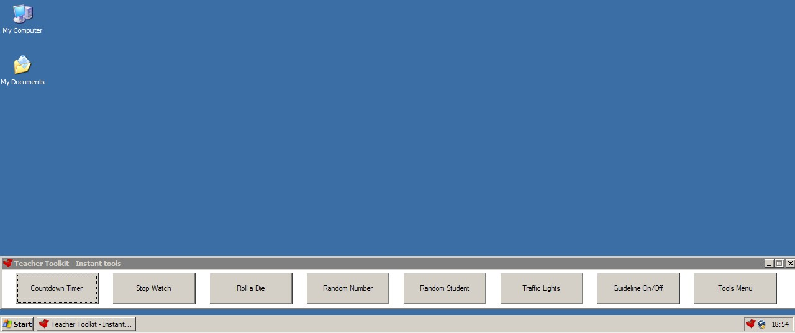

To access the Quick On-screen Tool Bar, make sure the Teacher Toolkit is running and is visible in the system tray.
(Shortcut Key = WindowsKey and Q)
(ALTERNATE SHORTCUT KEY = ScrollLock and Q)
Then LEFT CLICK on the icon in the system tray - this will display the Quick Access On-Screen Tool Bar:
